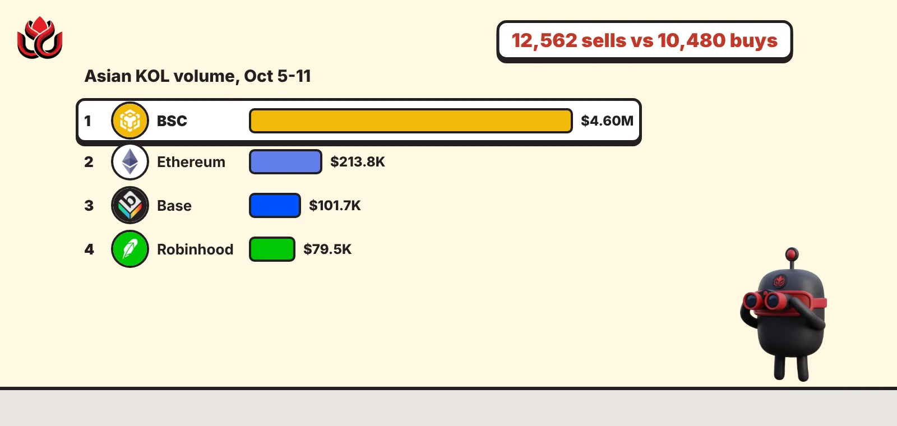
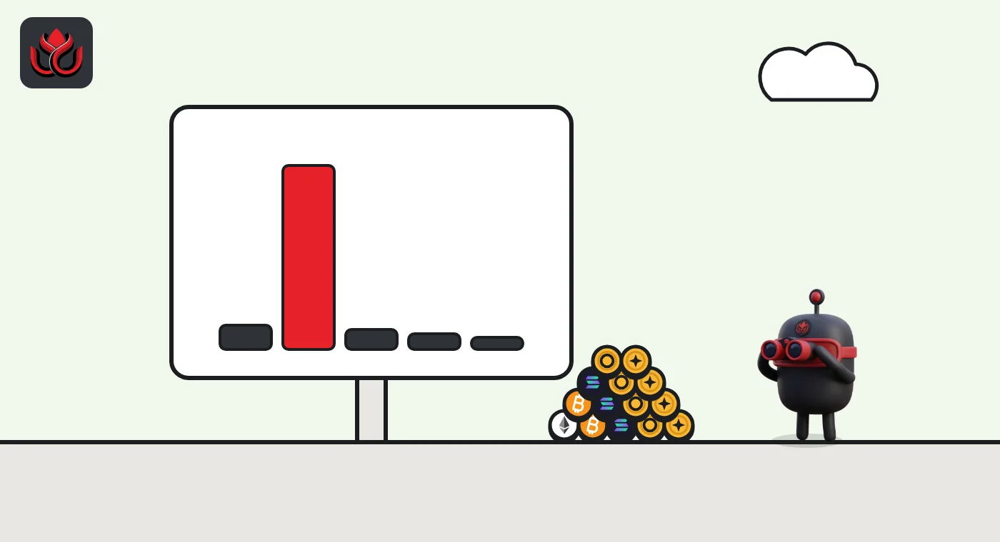
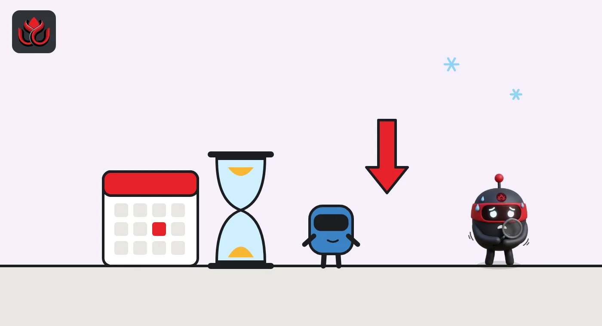

12,562 sells, 10,480 buys: what Asia's crypto influencers really did in early October
DeepSea's Asian KOL reports show influencer wallets selling more than they bought, a handful of traders taking most of the profit, and a quiet mid-October week on Solana. For followers, that is a warning.

Key points
- In the week of October 5 to 11, 112 of the 1,876 Asian KOL wallets DeepSea tracks were active, trading $5.00M on EVM chains with 12,562 sells against 10,480 buys.
- BSC carried $4.60M of that volume (92%) and +$235.8K of realized profit; the top earner, labeled 阿峰_Afeng, made +$63.9K.
- From October 12 to 18, only four Asian KOLs closed trades on Solana, for +$783 combined, while all 114 tracked Solana KOLs lost $156.7K.
What DeepSea's data shows
DeepSea published two Asian KOL Weekly Reports for October. The first, for October 5 to 11, found 112 active Asian KOL wallets out of 1,876 tracked, $5.00M of volume on EVM chains, 23,042 trades and +$230.4K of realized profit and loss (PnL, meaning gains or losses on trades that were closed). Of those wallets, 58 ended in profit and 50 in the red.
The second, for October 12 to 18, covered Solana only. It counted four Asian KOLs with closed trades and +$783 of combined PnL, against -$7.1K for the same group the week before. No new Asian KOL wallets were spotted.
When we checked on November 2, DeepSea had not published an Asian KOL report for October 19 onward, so the last two weeks of the month are not covered.
Data: DeepSea (desea.io), checked November 1, 2026, 11:30 p.m. ET.
What happened
Asian crypto influencers sold more often than they bought in early October. In the week of October 5 to 11, the wallets DeepSea tracks made 12,562 sells against 10,480 buys, according to the on-chain analytics platform. Most of the action was in memecoins on BNB Smart Chain.
These influencers, often called KOLs (key opinion leaders), post token calls to large audiences. Their wallets are public on-chain, so analysts can check whether they trade what they talk about. DeepSea follows 1,876 wallets it labels as Asian KOLs and publishes a weekly summary.
The report reads the sell-heavy week as profit taking, not loading up. It adds a warning for followers: when KOLs sell into strength, people buying after a call may be buying from the KOL.
BSC memes did almost all the work
Almost all the action sat on BNB Smart Chain (BSC). DeepSea counted 70 Asian KOLs there with 22,168 trades, $4.60M of volume and +$235.8K realized. Sells beat buys on BSC as well, 12,079 to 10,089.
Other chains were small. On Ethereum, 17 KOLs traded $213.8K and lost $7.8K. On Robinhood Chain, 14 KOLs traded $79.5K and made $11.3K. On Base, six KOLs traded $101.7K and lost $1.9K. Together the non-BSC chains added only +$1.6K, DeepSea said.
In DeepSea's flow map, Asian KOLs and Chinese-speaking smart wallets showed up buying three Chinese-language BSC memecoins: 四 (Chinese for "four"), ct and 币安链能飞 (roughly "Binance Chain can fly"). Three tracked wallets traded 四, including the KOL labeled 古月月 ($2.5K) and Ed_x區塊日記 ($3.4K). The largest single entries were in ct: $19.9K by the wallet labeled AntPositions and $16.1K by superstark, both tagged as smart money rather than KOLs.
Asian KOL trading volume by chain, week of October 5 to 11, 2026
US$ thousand
Source: DeepSea Asian KOL Weekly Report, October 5 to 11, 2026

A few big winners, many small losers
Profit was concentrated. The top earner, labeled 阿峰_Afeng (@aa_AFeng on X), made +$63.9K on $741.2K of volume with 1,471 buys, 1,189 sells and a 70% win rate. Next came 金狗挖掘机 | 0xDavid at +$54.2K and 西瓜 BNB at +$30.0K.
The biggest loss belonged to Ed_x區塊日記 (@Ed_x0101), labeled as Hong Kong-based: -$33.6K on BSC from 22 buys and 110 sells, plus -$9.6K on Ethereum.
DeepSea's numbers show how lopsided the game is. The top five winners averaged 1,470 trades each, against 30 for the median Asian KOL. Among KOLs with 10 or more trades, the median win rate was 37%. In other words, the profits came from a few large wins per wallet, not from being right most of the time.
Mid-October: a quiet week on Solana
The report for October 12 to 18 is thinner because it covers Solana only, while most Asian KOL activity sits on BSC. Just four Asian KOLs closed trades. The wallet labeled CVN, tagged Vietnam, made +$1.1K with four green days out of six. YeFan lost $22, Blockphd lost $36 and 0x高达 lost $229.
The wider group did worse. Across all 114 KOLs DeepSea follows on Solana, realized PnL was -$156.7K and only 35 finished the week in profit. The report's takeaway: following KOL calls is not a free edge.
DeepSea spots one new Asian KOL wallet on BSC, labeled 提莫队长
112 Asian KOLs active; 12,562 sells vs. 10,480 buys; +$230.4K realized
Four Asian KOLs close trades on Solana for +$783; all Solana KOLs -$156.7K
No Asian KOL report published as of November 2, 2026

The money around them
The same reports track exchange flows. Asian exchanges lost $4.75B net in the week to October 11 and $2.20B net in the week to October 18, driven by stablecoins leaving Binance, DeepSea said. On Hyperliquid, tracked perpetual futures traders swung from 4.2 times more long than short to 0.6 times, meaning net short, within one week.
A note on method. DeepSea identifies Asian KOLs from names and public handles, so region is an estimate. Realized PnL counts closed trades only. Open positions are not included.
LC Insight analysis
This section is our reading of the facts above, not a statement of fact.
- The sell-heavy pattern is the most useful signal here. When influencer wallets sell more than they buy during a meme rally, late followers are often the exit liquidity.
- Profit sat with a few very active wallets, which suggests KOL success is more about speed and volume than stock picking. A 37% median win rate is hard to copy by hand.
- The coverage gap after October 18 means the most volatile part of the month, including the October 29 Binance breach, will only show up in later reports.
What's next
- DeepSea's next Asian KOL report and whether it restores BSC coverage
- Whether 四 and ct keep drawing several KOL wallets at once
- Any KOL wallets that exit soon after public calls
Disclaimer. This article is based on public information and the sources listed below as of the update time shown. It is for information only and is not investment, legal or tax advice. Figures may change as companies and authorities publish new data.